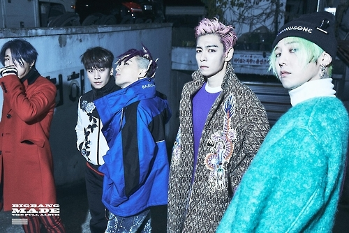
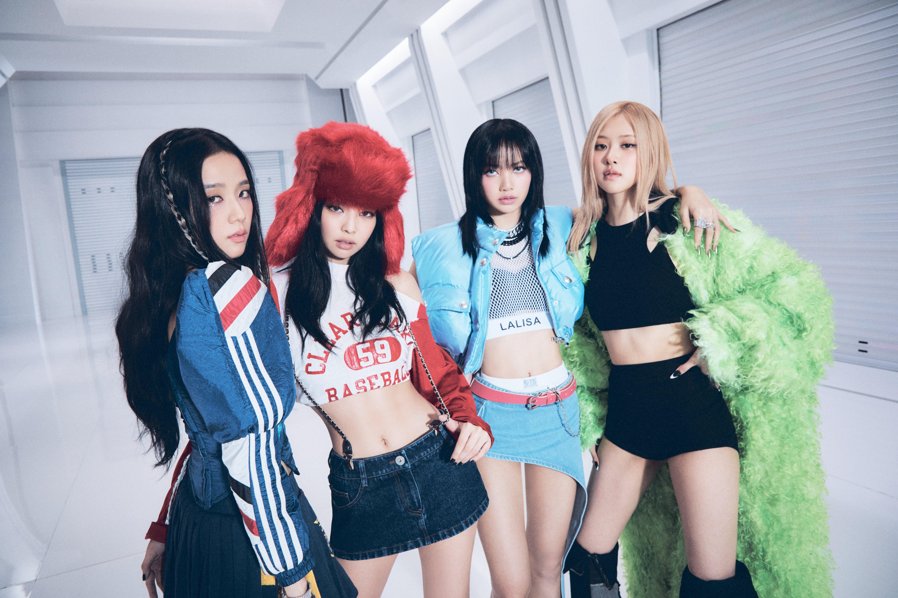
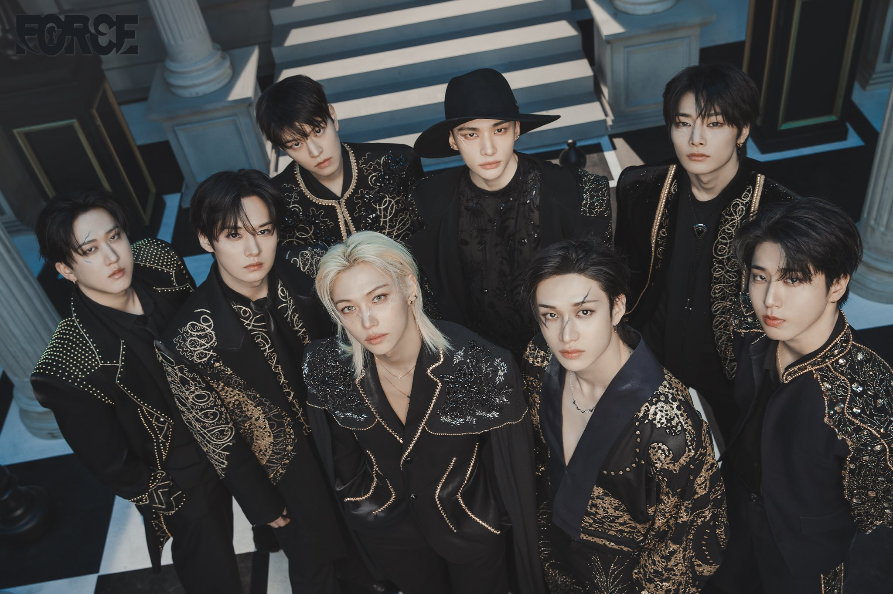
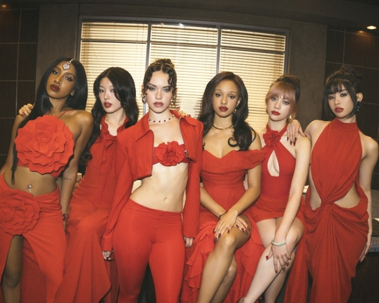

HISTORY
K-pop is more than just the entertainment success story of the Korean Wave.
It was shaped by many forces coming together: government globalization policies, neoliberal reforms
after the IMF crisis, youth self-expression, advances in media technology, and global cultural
exchange.
In the 1990s, South Korea went through major social changes. Lifetime employment became less secure,
traditional patriarchal hierarchies weakened, and the roles of young people and women in the labor
and cultural markets were redefined. At the same time, overseas travel expanded, restrictions on
Japanese culture loosened, and global pop culture flowed more freely into Korea. Looking outward to
the world became a defining mindset for a new generation.
The origin: Seo Taiji H.O.T.
1992-1999
First-generation K-pop began with the debut of a three-member group widely seen as the inspiration
for modern K-pop: Seo Taiji and Boys. They blended Korean music, fashion, and dance with Western
influences such as hip-hop, new jack swing, and rock.
Modern K-pop developed by combining J-pop’s idol training system with the musical, dance, and
fashion innovations introduced by Seo Taiji and Boys. The five-member boy group H.O.T., which
debuted under SM Entertainment in 1996, is widely considered the first modern K-pop group under this
new model.
K-pop as National Strategy After the Financial Crisis
1997
After the 1997 Asian Financial Crisis, the South Korean government began promoting culture as a
major export industry.
The government introduced policies to support the cultural sector, including new legislation and a commitment to invest at least 1% of the national budget in cultural industries.
The Expansion and the Second Generation Boom
2000-2011
From 2000 to 2011, amid continued economic uncertainty, the Korean Wave became one of South Korea’s
most successful and profitable cultural industries.
Idols also expanded into television, reality shows, and acting, increasing their
visibility and cultural influence beyond music. Key artists of this era include Super Junior, Girls'
Generation, IU, BigBang, and 2NE1.

The Third generation: Globalization
2012-2018
Third-generation K-pop became more diverse than earlier eras. Concepts moved beyond the traditional images. Groups embraced more creative styles. The industry became increasingly international, with members from different countries, breaking the earlier assumption that K-pop groups had to consist entirely of Korean members. Representative artists include EXO, NCT, BTS, TWICE, BLACKPINK, GOT7, and SEVENTEEN. Many became wellknown all over the world.

The fourth generation
2018-2022
The fourth generation of K-pop was shaped by the COVID-19 pandemic, which delayed large-scale
concerts and world tours. As fans turned to online spaces instead, fandom became even more global
and digitally connected.
Representative artists include Stray Kids, Aespa, ITZY, ATEEZ,
Tomorrow X Together, and (G)I-DLE.


Beyond Borders: K-pop as a Global Music System
2023-Now
K-pop is no longer limited to its original form. It has expanded into international idol groups such as XG and KATSEYE, producer-driven solo artists like Zico, and stylistically distinct new-generation acts such as NewJeans and other emerging groups. Artists of different nationalities, creative approaches, and labels have all found their place within the system, using music to cross borders and challenge labels. K-pop has evolved into a global music ecosystem—built on music, driven by international collaboration, and defined by constant cultural reinvention. It is no longer simply “Korean pop music,” but an open, fluid, and inclusive international music system.
